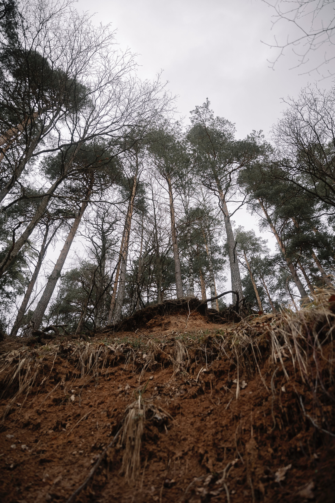
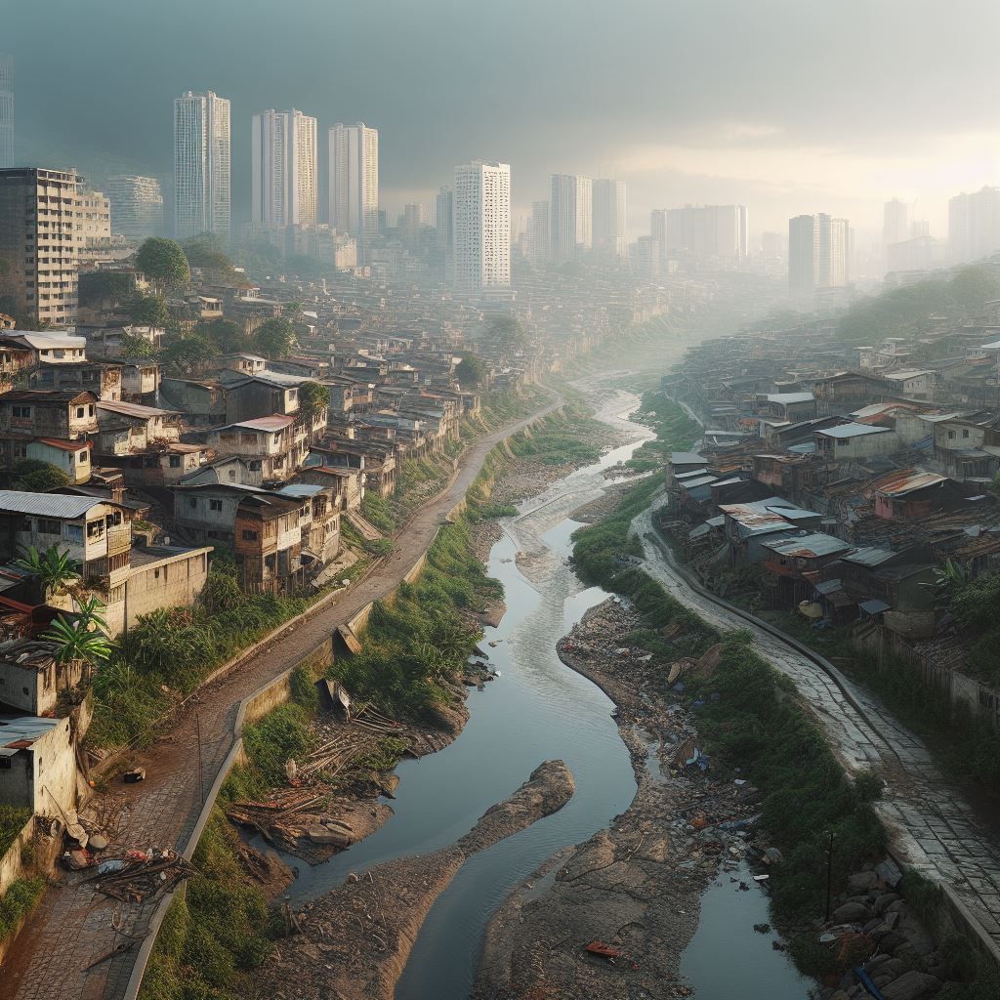
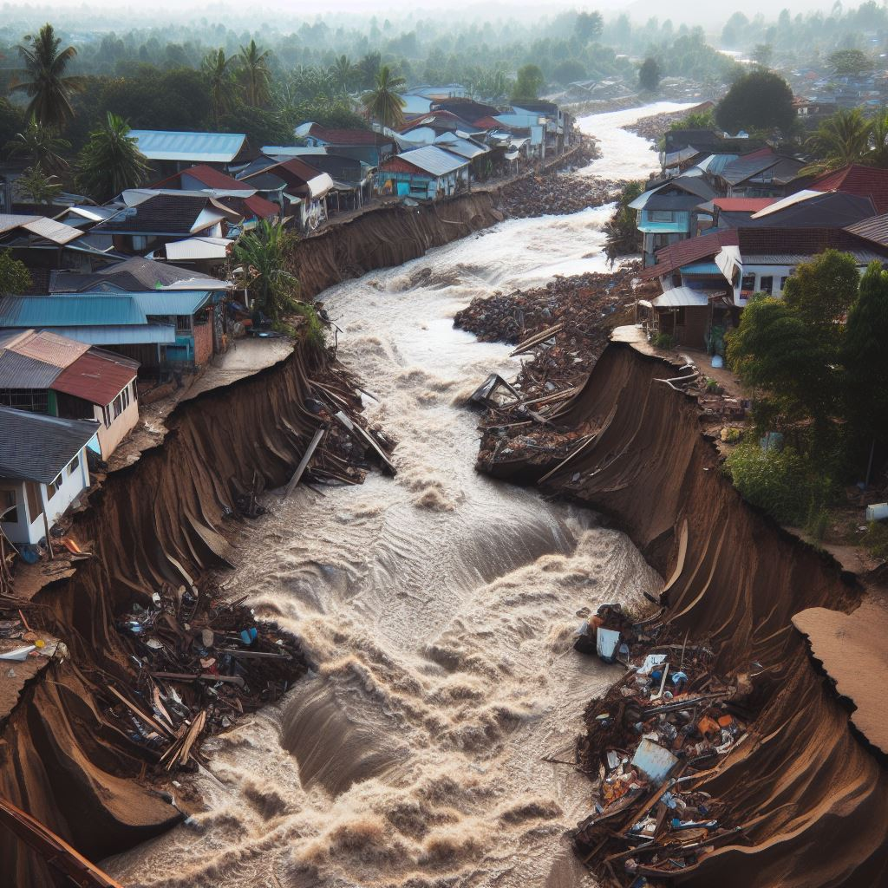

<!DOCTYPE html>
<html lang="en"></html>
<style>
  #customers {
  border-collapse: collapse;
  width: 80%;
  margin-left: 110px;
  }
  #customers td, #customers th {
    border: 1px solid #ddd;
    padding: 10px;
    text-align: center;
  }
  #customers tr:nth-child(even){background-color: #f2f2f2;}
  #customers tr:hover {background-color: #ddd;}
  #customers th {
    padding-top: 10px;
    padding-bottom: 10px;
    text-align: center;
    background-color: #2b4170;
    color: white;
    }
  </style>
<head>
  <meta charset="utf-8">
  <meta content="width=device-width, initial-scale=1.0" name="viewport">

  <title>Pemetaan Risiko Banjir Longsor</title>
  <meta content="" name="description">
  <meta content="" name="keywords">

  <!-- Favicons -->
  <link href="assets/img/favicon.png" rel="icon">
  <link href="assets/img/apple-touch-icon.png" rel="apple-touch-icon">

  <!-- Google Fonts -->
  <link rel="preconnect" href="https://fonts.googleapis.com">
  <link rel="preconnect" href="https://fonts.gstatic.com" crossorigin>
  <link href="https://fonts.googleapis.com/css2?family=Open+Sans:ital,wght@0,300;0,400;0,500;0,600;0,700;1,300;1,400;1,600;1,700&family=Roboto:ital,wght@0,300;0,400;0,500;0,600;0,700;1,300;1,400;1,500;1,600;1,700&family=Work+Sans:ital,wght@0,300;0,400;0,500;0,600;0,700;1,300;1,400;1,500;1,600;1,700&display=swap" rel="stylesheet">

  <!-- Vendor CSS Files -->
  <link href="assets/vendor/bootstrap/css/bootstrap.min.css" rel="stylesheet">
  <link href="assets/vendor/bootstrap-icons/bootstrap-icons.css" rel="stylesheet">
  <link href="assets/vendor/fontawesome-free/css/all.min.css" rel="stylesheet">
  <link href="assets/vendor/aos/aos.css" rel="stylesheet">
  <link href="assets/vendor/glightbox/css/glightbox.min.css" rel="stylesheet">
  <link href="assets/vendor/swiper/swiper-bundle.min.css" rel="stylesheet">

  <!-- Template Main CSS File -->
  <link href="assets/css/main.css" rel="stylesheet">

  <!-- =======================================================
  * Template Name: UpConstruction
  * Updated: Sep 18 2023 with Bootstrap v5.3.2
  * Template URL: https://bootstrapmade.com/upconstruction-bootstrap-construction-website-template/
  * Author: BootstrapMade.com
  * License: https://bootstrapmade.com/license/
  ======================================================== -->
</head>

<body>

  <!-- ======= Header ======= -->
  <header id="header" class="header d-flex align-items-center">
    <div class="container-fluid container-xl d-flex align-items-center justify-content-between">

      <a href="index.html" class="logo d-flex align-items-center">
        <!-- Uncomment the line below if you also wish to use an image logo -->
        <!--  -->
        
        <h1 style="font-size: 20px;">Teknik Geodesi UGM<span>.</span></h1>
      </a>

      <i class="mobile-nav-toggle mobile-nav-show bi bi-list"></i>
      <i class="mobile-nav-toggle mobile-nav-hide d-none bi bi-x"></i>
      <nav id="navbar" class="navbar">
        <ul>
          <li><a href="index.html">Beranda</a></li>
          <li class="dropdown"><a class="active" ><span>Tentang</span> <i class="bi bi-chevron-down dropdown-indicator"></i></a>
            <ul>
              <li><a href="tentang_banjir.html">Banjir</a></li>
              <li><a href="tentang_longsor.html">Longsor</a></li>
            </ul>
            <li><a href="peta.html">Story Maps </a></li>
          <li class="dropdown"><a href="#"><span>Peta Web</span> <i class="bi bi-chevron-down dropdown-indicator"></i></a>
            <ul>
              <li><a href="QGIS2WEB\risiko_banjir\peta\risiko_banjir.html">Risiko Banjir</a></li>
              <li><a href="QGIS2WEB\risiko_longsor\peta\risiko_longsor.html">Risiko Longsor</a></li>
              <li><a href="QGIS2WEB\PL\peta\PL.html">Penggunaan Lahan</a></li>
            </ul>
          </li>
          <li><a href="timkami.html">Tim </a></li>
          <li><a href="contact.html">Kontak</a></li>
        </ul>
      </nav><!-- .navbar -->

    </div>
  </header><!-- End Header -->

  <main id="main">

    <!-- ======= Breadcrumbs ======= -->
    <div class="breadcrumbs d-flex align-items-center" style="background-image: url('assets/img/about_longsor4.jfif');">
      <div class="container position-relative d-flex flex-column align-items-center" data-aos="fade">

        <h2>Tentang</h2>
        <ol>
          <li><a href="index.html">Beranda</a></li>
          <li>Longsor</li>
        </ol>

      </div>
    </div><!-- End Breadcrumbs -->

    <!-- ======= Alt Services Section 2 ======= -->
    <section id="alt-services-2" class="alt-services section-bg">
      <div class="container" data-aos="fade-up">

        <div class="row justify-content-around gy-4">
          <div class="col-lg-5 d-flex flex-column justify-content-center" style="text-align: justify;">
            <h3>Definisi Tanah Longsor</h3>
            <p>Tanah longsor atau gerakan tanah adalah gerakan menuruni lereng oleh massa tanah dan atau batuan penyusun lereng tersebut (Skempton & Hutchinson, 1969). Longsor terjadi ketika sejumlah besar material meluncur di atas lapisan tanah yang tidak dapat menyerap air dengan baik dan sudah jenuh air. Lapisan ini biasanya terbuat dari tanah liat atau memiliki kandungan tanah liat yang tinggi, atau bisa juga berupa batuan seperti napal liat (clay shale) setelah jenuh air akan bertindak sebagai peluncur (Arsyad, 1989).</p>
          </div>
          <div class="col-lg-6 img-bg" style="background-image: url(assets/img/longsor7.jfif); width:300px;height:100px;" data-aos="zoom-in" data-aos-delay="100"></div>
        </div>

      </div>
    </section>
    <!-- End Alt Services Section 2 -->

     <!-- ======= Our Team Section ======= -->
     <section id="team" class="team">
      <div class="container" data-aos="fade-up">

        <div class="section-header">
          <h2>Faktor Penyebab</h2>
          <p>Berikut merupakan beberapa faktor penyebab tanah longsor</p>
        </div>

        <!-- Tabel -->
        <div class="w3-row-padding">
          <div class="w3-half">
          <table id="customers">
              <tr>
              <th>No</th>
              <th>Faktor Penyebab</th>
              <th>Parameter</th>
              </tr>
              <tr>
              <td>1</td>
              <td>Faktor Pemicu Dinamis</td>
              <td>Kemiringan Lereng<br>Curah Hujan<br>Penggunaan Lahan (Aktivitas Manusia)</td>
              </tr>
              <tr>
              <td>2</td>
              <td>Faktor Pemicu Statis</td>
              <td>Jenis Batuan dan Struktur Geologi<br>Kedalaman Solum Tanah<br>Permeabilitas Tanah<br>Tekstur Tanah</td>
              </tr>
              </tr>
          </table>
          </div>
        </div>
        </div>

      </div>
    </section>
    <!-- End Our Team Section -->

    <!-- ======= Features Section ======= -->
    <section id="features" class="features section-bg">
      <div class="container" data-aos="fade-up">

        <ul class="nav nav-tabs row  g-2 d-flex">

          <li class="nav-item col-3">
            <a class="nav-link active show" data-bs-toggle="tab" data-bs-target="#tab-1">
              <h4>Proses Pemicu</h4>
            </a>
          </li><!-- End tab nav item -->

          <li class="nav-item col-3">
            <a class="nav-link" data-bs-toggle="tab" data-bs-target="#tab-2">
              <h4>Tanda-Tanda</h4>
            </a><!-- End tab nav item -->

          <li class="nav-item col-3">
            <a class="nav-link" data-bs-toggle="tab" data-bs-target="#tab-3">
              <h4>Daerah Rawan</h4>
            </a>
          </li><!-- End tab nav item -->

          <li class="nav-item col-3">
            <a class="nav-link" data-bs-toggle="tab" data-bs-target="#tab-4">
              <h4>Dampak</h4>
            </a>
          </li><!-- End tab nav item -->

        </ul>

        <div class="tab-content">

          <div class="tab-pane active show" id="tab-1">
            <div class="row">
              <div class="col-lg-6 order-2 order-lg-1 mt-3 mt-lg-0 d-flex flex-column justify-content-center" data-aos="fade-up" data-aos-delay="100">
                <h3>Proses Pemicu Tanah Longsor</h3>
                <ul>
                  <li><i class="bi bi-check2-all"></i> Peningkatan kandungan air dalam lereng.</li>
                  <li><i class="bi bi-check2-all"></i> Getaran pada lereng akibat gempa bumi, ledakan, penggalian.</li>
                  <li><i class="bi bi-check2-all"></i> Peningkatan beban yang melampui daya dukung tanah.</li>
                  <li><i class="bi bi-check2-all"></i> Pemotongan kaki lereng secara sembarangan.</li>
                </ul>
              </div>
              <div class="col-lg-6 order-1 order-lg-2 text-center" data-aos="fade-up" data-aos-delay="200">
                
              </div>
            </div>
          </div><!-- End tab content item -->

          <div class="tab-pane" id="tab-2">
            <div class="row">
              <div class="col-lg-6 order-2 order-lg-1 mt-3 mt-lg-0 d-flex flex-column justify-content-center">
                <h3>Tanda-Tanda Terjadinya Tanah Longsor</h3>
                <ul>
                  <li><i class="bi bi-check2-all"></i> Muncul retakan vertikal pada tebing.</li>
                  <li><i class="bi bi-check2-all"></i> Muncul air tanah secara tiba-tiba.</li>
                  <li><i class="bi bi-check2-all"></i> Air sumur di sekitar tebing keruh.</li>
                  <li><i class="bi bi-check2-all"></i> Terjadi longsor batu kecil.</li>
                </ul>
              </div>
              <div class="col-lg-6 order-1 order-lg-2 text-center">
                
              </div>
            </div>
          </div><!-- End tab content item -->

          <div class="tab-pane" id="tab-3">
            <div class="row">
              <div class="col-lg-6 order-2 order-lg-1 mt-3 mt-lg-0 d-flex flex-column justify-content-center">
                <h3>Daerah Rawan Tanah Longsor</h3>
                <ul>
                  <li><i class="bi bi-check2-all"></i> Daerah dengan sejarah longsor.</li>
                  <li><i class="bi bi-check2-all"></i> Tebing yang tidak ditumbuhi pohon (gersang).</li>
                  <li><i class="bi bi-check2-all"></i> Daerah tempat mengalirnya air hujan.</li>
                  <li><i class="bi bi-check2-all"></i> Daerah dengan curah hujan yang tinggi sepanjang tahun.</li>
                </ul>
              </div>
              <div class="col-lg-6 order-1 order-lg-2 text-center">
                
              </div>
            </div>
          </div><!-- End tab content item -->

          <div class="tab-pane" id="tab-4">
            <div class="row">
              <div class="col-lg-6 order-2 order-lg-1 mt-3 mt-lg-0 d-flex flex-column justify-content-center">
                <h3>Dampak Bencana Tanah Longsor</h3>
                <!-- Tabel -->
                <div class="w3-row-padding" style="margin-left: -110px;">
                  <div class="w3-half">
                  <table id="customers">
                      <tr>
                      <th>Dampak Kehidupan</th>
                      <th>Dampak Lingkungan</th>
                      </tr>
                      <tr>
                      <td>
                        <ul>
                        <li><i class="bi bi-check2-all"></i> Menelan korban jiwa</li>
                        <li><i class="bi bi-check2-all"></i> Kerusakan infrastruktur</li>
                        <li><i class="bi bi-check2-all"></i> Kerusakan bangunan</li>
                        <li><i class="bi bi-check2-all"></i> Kerugian secara ekonomi</li>
                        <li><i class="bi bi-check2-all"></i> Meninggalkan dampak sosial psikologi bagi masyarakat</li>
                        </ul>
                      </td>
                      <td>
                        <ul>
                          <li><i class="bi bi-check2-all"></i> Kerusakan lahan</li>
                          <li><i class="bi bi-check2-all"></i> Hilangnya vegetasi penutup lahan</li>
                          <li><i class="bi bi-check2-all"></i> Terganggunya keseimbangan ekosistem</li>
                          <li><i class="bi bi-check2-all"></i> Lahan kritis sehingga cadangan air menipis</li>
                          <li><i class="bi bi-check2-all"></i> Dapat menutup lahan seperti sawah, kebun, dan lainnya</li>
                        </ul>
                      </td>
                      </tr>
                      </tr>
                  </table>
                  </div>
                </div>
              </div>
              <div class="col-lg-6 order-1 order-lg-2 text-center">
                
              </div>
            </div>
          </div><!-- End tab content item -->

        </div>

      </div>
    </section><!-- End Features Section -->

    <!-- ======= Alt Services Section ======= -->
    <section id="alt-services" class="alt-services">
      <div class="container" data-aos="fade-up">

        <div class="row justify-content-around gy-4">
          <div class="col-lg-6 img-bg" style="background-image: url(assets/img/about_longsor3.jpg);width:200px;height:700px;margin-top: 100px;" data-aos="zoom-in" data-aos-delay="100"></div>

          <div class="col-lg-5 d-flex flex-column justify-content-center">
            <h3>Mitigasi Tanah Longsor</h3>

            <div class="icon-box d-flex position-relative" data-aos="fade-up" data-aos-delay="100">
              <i class="bi bi-easel flex-shrink-0"></i>
              <div>
                <p>Pengenalan dan menghindari daerah rawan longsor</p>
              </div>
            </div><!-- End Icon Box -->

            <div class="icon-box d-flex position-relative" data-aos="fade-up" data-aos-delay="200">
              <i class="bi bi-patch-check flex-shrink-0"></i>
              <div>
                <p>Mengurangi tingkat keterjalan lereng permukaan maupun air tanah</p>
              </div>
            </div><!-- End Icon Box -->

            <div class="icon-box d-flex position-relative" data-aos="fade-up" data-aos-delay="300">
              <i class="bi bi-brightness-high flex-shrink-0"></i>
              <div>
                <p>Pembuatan bangunan penahan, jangkar (anchor) dan pilling</p>
              </div>
            </div><!-- End Icon Box -->

            <div class="icon-box d-flex position-relative" data-aos="fade-up" data-aos-delay="400">
              <i class="bi bi-easel flex-shrink-0"></i>
              <div>
                <p>Penghijauan dengan tanaman yang sistem perakarannya dalam dan jarak tanam yang tepat</p>
              </div>
            </div><!-- End Icon Box -->

            <div class="icon-box d-flex position-relative" data-aos="fade-up" data-aos-delay="400">
              <i class="bi bi-patch-check flex-shrink-0"></i>
              <div>
                <p>Melakukan pemadatan tanah di sekitar perumahan</p>
              </div>
            </div><!-- End Icon Box -->

            <div class="icon-box d-flex position-relative" data-aos="fade-up" data-aos-delay="400">
              <i class="bi bi-brightness-high flex-shrink-0"></i>
              <div>
                <p>Pembuatan tanggul penahan dan penutupan rekahan di atas lereng</p>
              </div>
            </div><!-- End Icon Box -->

          </div>
        </div>

      </div>
    </section><!-- End Alt Services Section -->

  </main><!-- End #main -->

 <!-- ======= Footer ======= -->
 <footer id="footer" class="footer">

  <div class="footer-content position-relative">
    <div class="container">
      <div class="row">

        <div class="col-lg-4 col-md-6">
          <div class="footer-info">
            <h3>Teknik Geodesi</h3>
            <h4>Fakultas Teknik Universitas Gadjah Mada</h4> <br>
            <p>
              Jl. Grafika Bulaksumur No.2<br>
              Sendowo, Sinduadi, Kec. Mlati, Kabupaten Sleman<br>
              Daerah Istimewa Yogyakarta 55281 <br>
              <strong>Phone:</strong> (0274) 520226<br>
              <strong>Email:</strong> geodesi@ugm.ac.id<br>
            </p>
            <div class="social-links d-flex mt-3">
              <a href="https://twitter.com/geodesiugm" class="d-flex align-items-center justify-content-center"><i class="bi bi-twitter"></i></a>
              <a href="https://www.facebook.com/geodesiugm" class="d-flex align-items-center justify-content-center"><i class="bi bi-facebook"></i></a>
              <a href="https://www.instagram.com/geodesiugm/" class="d-flex align-items-center justify-content-center"><i class="bi bi-instagram"></i></a>
            </div>
          </div>
        </div><!-- End footer info column-->

        <div class="col-lg-2 col-md-3 footer-links">
          <h4>Menu Utama</h4>
          <ul>
            <li><a href="index.html">Beranda</a></li>
            <li><a href="tentang_banjir.html">Tentang Banjir</a></li>
            <li><a href="tentang_longsor.html">Tentang Longsor</a></li>
            <li><a href="peta.html">Story Maps</a></li>
            <li><a href="timkami.html">Tim</a></li>
            <li><a href="contact.html">Kontak</a></li>
          </ul>

        </div><!-- End footer info column-->

        <div class="col-lg-2 col-md-3 footer-links">
          <h4>Tautan</h4>
          <ul>
            <li><a href="https://geodesi.ugm.ac.id/">Teknik Geodesi UGM</a></li>
            <li><a href="https://ft.ugm.ac.id/">Fakultas Teknik UGM</a></li>
            <li><a href="https://ugm.ac.id/">Universitas Gadjah Mada</a></li>
          </ul>
        </div><!-- End footer links column-->

      </div>
    </div>
  </div>

  <div class="footer-legal text-center position-relative">
    <div class="container">
      <div class="copyright">
        &copy; Copyright <strong><span>Kelompok 6 dan 20 PRGG</span></strong>. All Rights Reserved
      </div>
      <div class="credits">
        <!-- All the links in the footer should remain intact. -->
        <!-- You can delete the links only if you purchased the pro version. -->
        <!-- Licensing information: https://bootstrapmade.com/license/ -->
        <!-- Purchase the pro version with working PHP/AJAX contact form: https://bootstrapmade.com/upconstruction-bootstrap-construction-website-template/ -->
        Designed by <a href="https://geodesi.ugm.ac.id/">TeknikGeodesiUGM</a>
      </div>
    </div>
  </div>

</footer>
<!-- End Footer -->

  <a href="#" class="scroll-top d-flex align-items-center justify-content-center"><i class="bi bi-arrow-up-short"></i></a>

  <div id="preloader"></div>

  <!-- Vendor JS Files -->
  <script src="assets/vendor/bootstrap/js/bootstrap.bundle.min.js"></script>
  <script src="assets/vendor/aos/aos.js"></script>
  <script src="assets/vendor/glightbox/js/glightbox.min.js"></script>
  <script src="assets/vendor/isotope-layout/isotope.pkgd.min.js"></script>
  <script src="assets/vendor/swiper/swiper-bundle.min.js"></script>
  <script src="assets/vendor/purecounter/purecounter_vanilla.js"></script>
  <script src="assets/vendor/php-email-form/validate.js"></script>

  <!-- Template Main JS File -->
  <script src="assets/js/main.js"></script>

</body>

</html>